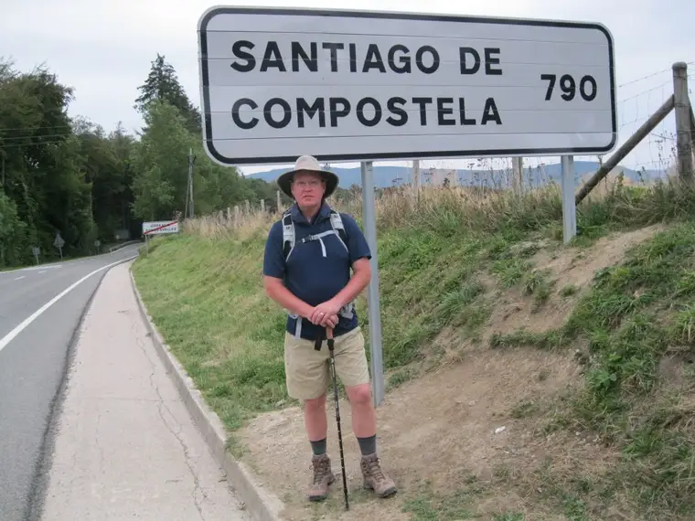

FARGO — Five years ago, Luke and Evie Larson decided to take a walk that changed their lives.
{kind=link}

Walking the Camino de Santiago de Compostela in northern Spain involved 500 miles by foot — about a daily half-marathon — and seven weeks’ time.
“Evie and I have always been incredibly close, but the Camino renewed our commitment to spend time together,” says Luke, noting that post-pilgrimage, they disconnected their cable television and began walking together regularly.
“It’s time for us to just really, in a relaxed, comfortable way, be together — to talk a little here, laugh a little there — and sometimes just walk in silence and commune with the Lord,” he says.
“If you’re wanting to renew, strengthen and deepen a relationship with somebody, walk with them,” Luke adds. “We do that early on in our relationships, but when the busyness takes over in our lives, we start staying late at the office or watching TV. That’s not really nourishing relationships.”
Luke’s written account of the experience, “Keeping Company with Saint Ignatius: Walking the Camino de Santiago de Compostela,” was published recently by Paraclete Press.
The book includes a pocket guide to hopefully inspire individuals, couples and even groups to take up the kind of walking they’ve discovered — walking as a form of prayer and “keeping company” with others, both in heaven and on earth.
Martin Sheen plug
As Luke came closer to completion of his work, he had an idea — to approach the actor Martin Sheen, whose family originates from the Camino area, for an endorsement.
He reached out to Sheen’s literary publisher, uncertain anything would come of it. But one day, while on a sailboat on vacation in the San Juan Islands, Luke’s cellphone rang, and Sheen was on the other end.
“I would have thought having a call from such a famous actor would have put my heart in my throat,” Luke recalls. “But he was such an incredibly kind and gentle and down-to-earth person. He said, ‘Luke, I would be glad to support your book.’ ”
Sheen has become something of a kindred spirit to him, he says. “I’ve read his entire autobiography since then and have watched his movie, ‘The Way,’ many times.”
Directed, produced and written by Sheen’s son, actor Emilio Estevez, and starring Sheen, the film promotes the traditional Camino pilgrimage along with the comradeship that often results.
“It’s definitely true to the spirit of the Camino. People really do start friendships there,” Luke says. “It’s an ebb and flow, and you can become dear friends in just a few days on the Camino, and often with people you might not be naturally drawn to otherwise.”
Fellow pilgrims
Against the odds, the Larsons ran into a few locals on their journey, including Fargo entrepreneur Greg Tehven and a former North Dakota State University student from the Czech Republic.
“I just find it so wild how we were in the same place with people who knew where we were from,” Evie says. “It’s remarkable, really.”
The Larsons brought others with them spiritually, including Saint Ignatius, whose spiritual exercises played a part in the Larsons’ experience, as well as Mary, mother of Jesus, whom Evie credits with helping her endure the walks when her feet began to ache.
Family and friends also “came along” through daily prayer dedicated to them, and in a very special way, so did Luke’s brother Adam, who died in the Sept. 11, 2001, New York City terrorist attack.
Though the two fought their way through growing up, Luke says, in adulthood they became best friends. “We would write each other as soon as we got to work, sending quick emails.”
The morning of Sept. 11, 2001, however, the email that flashed onto Luke’s screen was disconcerting, and proved to be the last time he’d hear from his little brother. Adam was 37.
Coincidentally, the Larsons’ trip started on the nine-year anniversary of Adam’s death. They left for France, where the first leg of the trip would begin on the French side of the Pyrenees Mountains, on Sept. 11, 2010.
It was a blessing, Luke says, to have “the time and the space, aside from the daily routines, to really think about him and again, to really be with Evie, and that sense of being with the Lord as well.”
While the couple hopes the book might inspire others to try a Camino walk, they realize not all can.
“We may not all be able to do a pilgrimage, because of time, resources or physical ability,” Luke says, “but we can do activities that set us aside from the hustle and bustle of normal life.”
For some, he says, it might be watering the garden, taking a sunset stroll or hiking in a beautiful setting. “Those kinds of things naturally lift up our hearts and minds to the Lord.”
The point is, we can all do something, no matter our state in life or resources.
“A pilgrimage is nothing more than a journey to a place that’s considered sacred or touched by the hand of God,” Luke says. “In that sense, even in something as simple as walking to church, you’re walking to a holy destination.”
Online: lukejlarson.com
[For the sake of having a repository for my newspaper columns and articles, I reprint them here, with permission, a week after their run date. The preceding ran in The Forum newspaper on Sept. 12, 2015.]